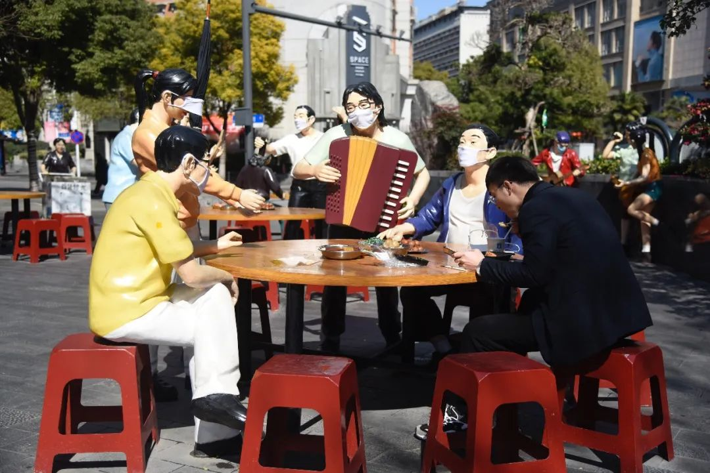
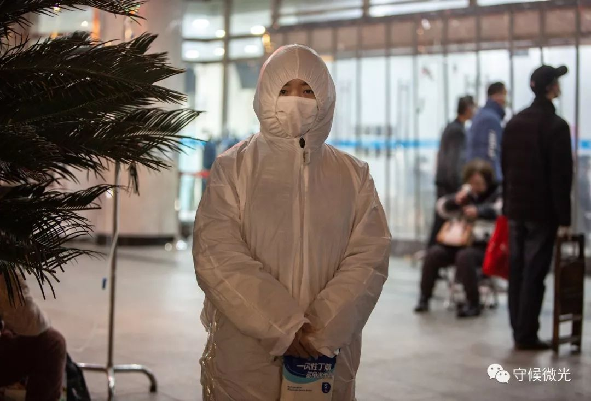
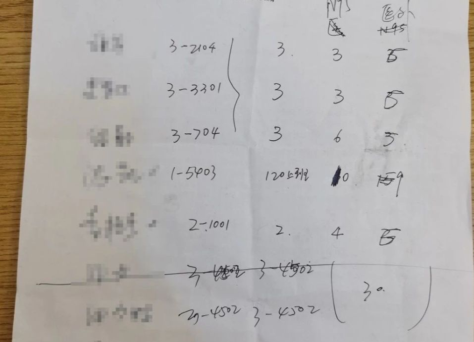
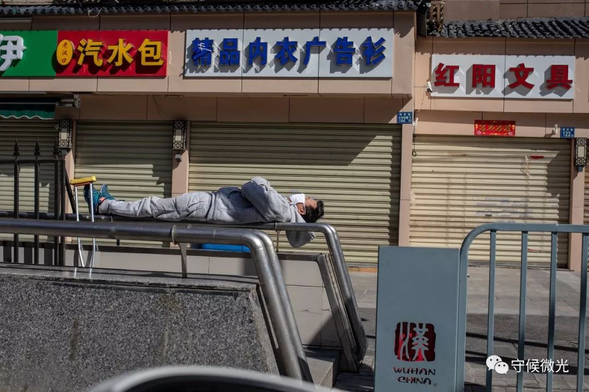
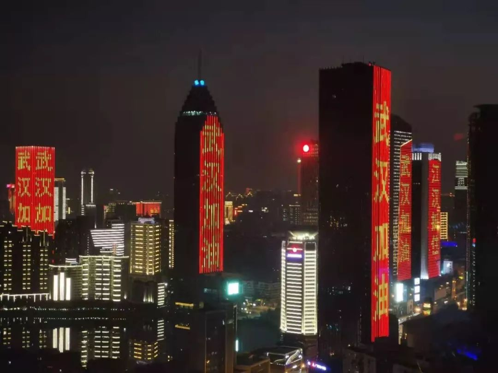

网络质疑、商家欺骗…疫情之下的年轻志愿者们如何应对？
原文链接 备份链接 参与物资捐赠工作的年轻志愿者，很多也是第一次卷入互联网的风波里。 文 | 吴敏霞 余晓璐 编辑 | 沈小山 疫情当前，海内外学生志愿者也在行动。网络质疑、商家欺骗，打通物资渠道的工作在互联网暴露大量信息。这些参与物资 …

2月16日中午，武汉市江岸区的美食街吉庆街上，一处雕像被人挂上了口罩，一位市民坐在旁边吃午餐。中青报·中青网见习记者 鲁 冲/摄
作者 何可人
冰点周刊×腾讯新闻谷雨
武汉封城第十六天后，武汉姑娘小曲在豆瓣广播里贴了一张黑色的海报，上面是海明威的话：所有人其实是一个整体，别人的不幸就是你的不幸。
刚刚封城的时候，小曲一度自行“断网”：不上微博，不刷短视频，不去豆瓣“自由吃瓜”小组，不参加各种群聊……只在家里看美剧，练瑜伽，跟爸妈学做菜。决定源自小曲在网上看到的一份“恐慌下心理救助手册”。手册上建议少去浏览负面信息。除此之外，生活中该做什么就做什么。
小曲当时接受了这份“心理干预”。和众多武汉市民一样，她在疫情突变的短短数日里，经历了不以为意、紧张、不安、悲愤等心理起伏。她带着这些情绪泡在豆瓣小组里，有时回击别人针对武汉人的“地图炮”，有时安抚外地网友过度紧张的情绪，有时发帖给家乡打气加油。
1月23日凌晨，武汉宣布“封城”。小曲“特别无助”，觉得“被人抛弃了”，而她常去的“自由吃瓜”小组，“整个瓜组都在欢呼”。
各地开始组织物资驰援武汉。除夕这天，小曲看到好几个帖子都对武汉人流露出不友好，糟糕的情绪至此累积到顶点。她决定断网“自救”，回避网上的歧视，也回避各种晚会上的欢呼。
半个月后，小曲刷完了好几部美剧，学会了摊煎饼，平板支撑练到能坚持一分钟……她不再需要靠“断网”来隔绝最初的紧张焦虑甚至愤怒，能够更冷静地直视眼前的世界。
这也是不少留守武汉的人共同的经历。500万人离开，900万人原地不动，他们既要捍卫自己的平安，也要紧紧地拽着病毒不滑向更广大的人群。乐观、沮丧、焦虑、不安、疑惑、希望、失望，种种情绪随着疫情的变化，在人心里交替消长。
留下的人眼前，是城市的伤痛和自救。但如武汉那句著名的市民哲学“冷也好，热也好，活着就好”，只要人还平安，就要努力生活下去。

1月31日，武汉同济医院发热门诊空间有限，许多患者在门外的花园里打点滴。中青报·中青网记者 李峥苨/摄
作 乐
一位40多岁的大汉，穿着灰色睡衣睡裤，站在高层的楼顶钓鱼。鱼从直径不到1米的鱼缸里钓出，大汉喊着“快快快快”，拿着网兜的小男孩小跑过去，将鱼捞住。
武汉人阿娇看到这段视频时哈哈大笑。那会儿封城才刚开始。面对这前所未有的局面，留守者摁下不安，苦中作乐。钓鱼大汉是阿娇的同事，用武汉话形容，是一位“咵天高手”。封城后，大哥宅在家里，开始拍趣味小视频。微博上流传“武汉人宅在家里的100种方式”之前，她的这位同事就已拍下了钓鱼视频。鱼是之前储备的年货，没想到封城后有了娱乐的用途。鱼钓了5次才上钩，视频也因此拍了5次。收工后，鱼被煮进了火锅。
家距华南海鲜市场2.6公里的阿娇，手机里存了一份武汉市民某一时间节点内的“街道风险排序表”，上面由高至低排列了全市一百几十个街道的疫情风险指数。第一名是唐家墩——离华南海鲜市场700余米，风险高达96.52，最低的是36.38的鲁湖。阿娇所在的塔子湖街道排名11，风险指数93.3。
外地朋友在微信群里关心阿娇的状况，她常常在大家一段灰心或愤慨的对话中，插入几句“过年好”“财神到”的喜庆口号。或是一片唉声叹气后，给大家打一针“兴奋剂”：“没事，一定没事，武汉一定能挺过去的。”
整座城市草木皆兵，阿娇和家人起初庆幸自己是健康的，直到他们的亲戚中出现了确诊病例，全家人吓得睡不着觉。在此之前，一家人的生活有条不紊地进行。父母早上醒来，先用84消毒液兑水拖地。无法出门“过早”，早餐也要尽量丰富：面条配腊肉，蒸馒头加黑芝麻糊，水蒸蛋加炸面饼。藕汤必不能少。头天晚上把粉藕和排骨丢进锅里，炖上一夜，第二天早上盛上一碗。之前储备的年货越吃越少，莲藕汤里的上排慢慢变成龙骨。封城第七天的时候，阿娇的妈妈嫌龙骨没肉，又扔了块猪蹄进去。阿娇笑：“龙骨没肉，猪手来凑，还是第一次吃。”阿娇想念在武汉人中大名鼎鼎的“王师傅豆皮”，馋得咽口水。她去网上找了制作豆皮的教程，想在家一试。
她说，这就是武汉人，“很有娱乐精神”，“总能兵来将挡，水来土掩。”
封城第一周，这样的心态见于许多武汉市民的生活里。在豆瓣上的“武汉豆瓣”小组里，到处都是这样的生活痕迹。有人在读《霍乱时期的爱情》，有人开始看心理学书籍，有人号召大家向孤岛时期的文学家学习，执笔记录当下，有人购置了望远镜表示要仰望星空，有人下单了显微镜，准备观察唾液细胞和草履虫。
封城前，小曲就做好了宅在家里的准备。她和表弟表妹们约好，今年不串门，不走亲戚，大家一起在网上打麻将。试了好多款游戏，系统都不允许亲友自建房间，只能随机加入。表弟表妹们改投另一款游戏的阵营。小曲下了4个单机游戏，每个都充了6元钱。
小曲的爸爸在网上斗地主，成绩毫无进展。她就拉着爸爸一起运动，时不时地做10个俯卧撑。放下心理包袱后，小曲“无所畏惧”地“刷剧”，看了不少剧集，包括《血疫》这类内容涉及传染病的惊悚剧。
看别处的剧情，小曲想的是眼前的武汉。她说武汉人“表面比较刚”，实际“内心柔软得不得了”。她不知道家乡未来如何，武汉人会不会有心理阴影，也不知道有多少人会在绝望和希望中纠结。最后带给她安慰的一部剧集，讲的是8个来自不同城市的人齐心协力杀出一条生路的剧情，这让她觉得，“在武汉也不会孤单……总有人会安慰、治愈你”。

2月2日，武汉同济医院发热门诊门外，身着防护服的患者家属梁倩。她母亲已确诊感染新型冠状病毒，在这里输液和吸氧，等待收治的床位。中青报·中青网记者 李峥苨/摄
除了武汉本地人，900万人里也有留守的外乡人。皮克老家在山东，在武汉求学、恋爱、置业，已度过12年。他原计划年后开车回老家，因疫情作罢。
封城时，皮克的全部储备有：一包腊肠，两包水饺，一袋速食拉面，一捆湿面条，两袋米，30个咸鸭蛋，几棵大葱，一瓶老干妈辣酱，一箱纯牛奶。他算了算，省着点吃，米饭配咸鸭蛋也能撑半个多月。他仿照网上的段子，调侃自己的留守生活：“大葱炒鸡蛋，放了856粒盐，味道不咸不淡。”从网上找来“第八套广播体操”，他在家一边喊“一二三四”，一边伸胳膊伸腿。
更重要的，是他有100多个N95口罩和半瓶消毒液。一切安排好，皮克封闭好门窗，想着“躲进小楼成一统，管他冬夏与春秋”。
1月27日晚上8点，武汉的楼宇间响起了起此彼伏的“武汉加油”。声音传到千家万户，让隔绝数日的人自发地投入宣泄，一瞬间悲喜相通。小曲听见了。她原本觉得武汉已经是一座“空城”，直到听见这些并不整齐的声音，才感觉“周围还有那么多人”。阿娇也听到了，趴在29楼窗口不管不顾地跟着喊。皮克嗓门不够，他把一台音箱搬到窗台，把音量调成最大，播放《义勇军进行曲》。各种各样的视频被传到互联网上。
有人用武汉当地朋克乐队SMZB的歌词形容这一夜：“这里不会永远象一个监狱/打破黑暗就不会再有哭泣/一颗种子已经埋在心里/这是一个朋克城市，武汉。”
互 助
封城第二天，因为公共交通停摆，武汉医务人员上下班出现困难。本地车主迅速集结成队伍，志愿接送医护人员上下班。Vlog博主“蜘蛛猴面包”带着镜头加入了队伍，既接送医护人员，也协助运送救援物资。志愿车队人数超过5000人，有武汉人、外地人，也有在武汉生活了7年的外国人。
陌生的人们一起抵抗疫情，积极互助。一位护士看到“蜘蛛猴面包”只戴一个外科口罩，在车里留下一个N95。另一位护士说着令她感动的细节：同事缺口罩，就有邻居送去了仅有的N95；同事缺护目镜，家门前就被人默默地挂上一副泳镜。
更多个体和民间组织的互助跑了起来。有酒店业主组织300多家武汉本地的酒店，每日提供1.5万间房，就近给医护人员提供免费住宿。火神山、雷神山医院开工后，民间工程车志愿者们也驶进建设工地。汉口北批发城的一些业主联名表示， 愿意把仍未投入使用的商铺捐出去，作为隔离点，“为武汉解难”。在方舱医院，有护士发现，一位患者默默地收拾垃圾，希望减少保洁人员的感染风险。
城封了，留下的人成了命运共同体。小曲闺蜜的婆婆有了疑似症状，在医院从除夕排队到初一。现实再无可避，小曲着急得跟着哭。一贯乐观的阿娇刷到各种纷乱的信息忍不住哭出来，感觉耳边满是 “嗡嗡声”。她去好多平台找“武汉加油”的捐款通道，“只要看到了就捐一点”，每天都捐。
和被疫情忽然砸晕的武汉市民不同，皮克提前就被预警了危险。他家距离武汉协和医院、华南海鲜市场、汉口火车站都在2公里左右。他的女友在本地一家医学院读博士。1月18日，在老师措辞严厉的预警后，女友花了200元在网上买下100个N95口罩。
那时公众当中还没有病毒“潜伏期”概念，没有症状的人们正常访亲会友。1月20日，国家卫生健康委高级别专家组对媒体提醒，病毒已有“人传人”案例。1月21日，皮克女友的闺蜜上门拜访，3个人在家吃了顿火锅。次日，他们接到电话：那位闺蜜一家五口三代人，除了孩子，全都出现了疑似感染症状。
危险骤然逼近眼前。皮克找到3天前买口罩的网店，再下单100个口罩，此时价格已经从200元涨了800元。当晚，100个口罩的价格就涨到了7000元。
大量的信息在各种平台传播。皮克家所在小区业主群里不到500人，除夕当夜发了3万多条语音。皮克意识到，自己可能是个密切接触者。他找到小区业主群的群主做了报备，对方说“没事没事”。
小区群里有资源的“老板”，开始调动关系往城内运送物资。皮克看着大家激烈的反应，开始想“我能帮点什么”。
200个N95口罩，被1月22日回老家的女友带走50个，再加上单位发的、家里存的一点医用外科口罩，总数不到200个。皮克在群里说：“我帮不了大的，但是我可以帮小的。小区里谁没有口罩，或者不足，加我微信。”
近10个好友申请出现在他的微信里。深夜一点多，皮克趴在客厅桌子上规划口罩派发方案。他给每人配4个口罩指标，N95算一个，医用外科口罩二抵一。大部分求助者都是两口、三口之家，每家可分8个或者12个口罩。只有一对夫妻除外，那位丈夫告诉皮克，妻子在120急救中心工作，非但缺N95口罩，每天回家还要把隔离服挂在阳台上吹，舍不得扔掉。皮克给这对夫妻留了20个N95和10个医用外科口罩。他在群里承诺，初一中午12点前，一定将口罩送到每家门前。

按照皮克山东老家的习俗，初一早上要吃素饺子，还需要盛三个饺子，和鱼、肉一起供奉在灶台上，磕了头后再吃。皮克没条件讲究荤素，在母亲的叮嘱下把饺子盛在桌上，磕了三个头，然后开始包口罩。每一户的口罩装入食品密封袋里，捆好，扎紧，上面贴着提前写好的联系人微信名、楼栋号、家里人口数和口罩数。
带着口罩，皮克出了门。他把袖口领子全部绑紧，戴上手套、口罩，头上罩一顶酒店里的一次性浴帽，戴上女友的泳镜。皮克给自己这副怪模样拍了照，却没把照片发给任何人——他不敢让亲友知道自己这个节骨眼还往外跑。雾气凝结在泳镜里，皮克不太看得清路，好在小区楼栋他都熟悉，挨个摸到各家的门前，用胶带把每捆口罩贴在门上。
11点左右，皮克回家，又等了半小时才在群里通知大家可以开门取口罩了。这时候他才想起来，供奉饺子时候忘了摆筷子，“神仙不会怪罪我吧”。
大年初二，皮克女友的闺蜜确诊了，家里好几个大人都去了酒店隔离，唯一健康的女儿由外婆在家照顾，家里急需消毒液。皮克很沮丧，在群里问：谁家有富余的消毒液，如果方便，能否匀出来一部分，“放在你们家门口的电梯口就好了，我自己去取，免得见面。”
有人积极响应。皮克上门去取，发现陌生的邻居早早打开家门，等着自己出现——他昨天收到了皮克送的口罩，执意要当面感谢。皮克因为担心自己已被感染，扒着电梯门不出去，隔着四五米喊话：“不用感谢，你赶紧回去！”

2月19日，武汉百步亭社区，窗台边的一位老人。中青报·中青网记者 赵迪/摄
记 录
大年初三晚上，皮克家小区外几栋高楼的巨幅LED屏，忽然亮起了红色的“武汉加油”。小区邻居胡大哥是无人机爱好者，觉得口号“燃”，“应该要记录一下”，于是爬到楼顶开始拍摄。
第一段视频才15秒，发在小区业主群里。画面里一栋亮灯大楼，皮克认出“那是10年前武汉的最高楼”。他的窗外是六车道的建设大道，平时汽车川流不息。如果不是疫情暴发，这个时节，武汉的街上和小区里该是人声喧哗。人们热热闹闹地走出家门，来到街上，高声地彼此招呼。但他们拍到的武汉一片寂寥，商圈和社区都紧闭门户。
Vlog博主马峰，每隔一天就全副武装地上一次街，举着他的镜头。街上安静得令他发慌。银行、小店铺和他常去的健身房都关了门。路上的车一只手能数得过来。行人稀少，绝大部分人戴上了口罩，偶尔能见到不戴口罩的大爷双手抄着兜走过。
大型超市是街面上最有人气的地方。马峰以前觉得在超市排队特别烦，这一次，“我专门找到人排队的地方，感觉好幸福啊，碰到人了！”
大年初五，马峰在家附近的汤逊湖边溜达，看见一个大爷正在持杆垂钓，身边4个大爷在围观。大爷们都穿着睡衣，戴口罩，彼此并不交谈……画面颇为滑稽，“大家就是憋坏了”。

1月29日，汤逊湖边的垂钓者和围观者
阿娇每天也用手机拍上一段视频。她在29楼的窗口，举着手机向下。有时候能看到一辆快递电瓶车出现在小区，俯瞰像只蚂蚁。阿娇把大拇指伸出窗外，说“终于有人给我们送这送那……赞”。天气多阴霾，偶遇晴好，阿娇也不忘在视频里开心提上一嘴。她们全家不出门，但每天要看天气预报，火神山、雷神山两座临时医院日以继夜施工时，人们满怀希望，期盼着能赶紧竣工，生病的人能“应收尽收”。
2月10日，有人拍到北湖路上，一位被感染的市民等到了医疗转运车，被送往医院。他的老父亲，穿着睡衣，原本隔着两三米目送，忽然骑上电动车，一路跟在转运车后相送。
也是这天，阿娇得知从小就认识的一位医生伯伯被感染，好在“病情好转，往轻症的地方隔离了”。她那位拍钓鱼视频的同事不再拍摄小视频，只是上传家里生机勃勃的绿色植物的图片。阿娇觉得大哥情绪有时候“低气压”，猜测他多半听见了不好的消息。
解封之日未定，“武汉豆瓣”小组里的氛围也在变化。人们不再热衷分析“封城之后能干什么”，更忙着交换身边人“排查”“做核酸”的信息，分析每日公布的疫情数据，或者交流买菜、买药的心得体会……有人失眠，有人担心——不再有人责怪别人倾诉焦虑，有人写道，“这些说着丧气话的普通人……更能给我信心”。
2月16日，湖北省武汉市，利济路上，一名市民躺在栏杆上晒太阳。中青报·中青网记者 李隽辉/摄
900万人的眼睛、镜头和文字都在记录着历史。65岁的武汉作家方方受文学杂志《收获》邀请，开始写“封城记”。她困于湖北省文联的宿舍大院里，一个人和一条16岁的老狗作伴。
方方每天吃点清淡的粥菜，晚上在跑步机上走步一小时。她说，往年年关，大院里车来车往，满是迎客送客的笑声。不远处的东湖，但凡周末，道路会堵得一塌糊涂，如今空无一人。
封城半个月，武汉许多小区建起了互助买菜群。业主们轮班制，集体采购、分发、领取。方方通过采购群订购过猪肉，她感慨：“生活那么艰难，但办法还是有的。”她觉得武汉人“又爽快又坦诚又吊儿郎当又听话”。
疫情暴发后，她在网上看到诸多医护人员和病人的视频，“那种悲哀无助的感受，我今生从未有过。”
小曲一直在追方方的日记，也开始在电脑里每天写日记。大概剧集看多了，她有了些英雄念头，跑去豆瓣“自由吃瓜”小组发帖：如果你穿越到两个月前，有没有办法把这件事情减少损失？小组成员给她泼冷水，她感慨，“大家的回答，都太现实了。”
2月7日，年轻的武汉医生李文亮去世的消息传来，小曲心情无法平静。许多情绪在她心里来回冲撞，许多问题她得不到答案。城市的伤口终会愈合，但有些人会一直被封印在伤口下，小曲告诉自己，“不要忘，忘得慢一点……”这也是皮克所想，这一天，他在微信朋友圈写下“只怕记忆太短暂”。
皮克挺过了14天的隔离期，他是健康的。但他的小区里有人被“抬出去”——病毒带走的生命越来越多。邻居胡大哥的无人机视频越拍越长，镜头里的武汉湿漉漉的，画面中有从头防护到脚的医务人员，也有闪着灯的警车和救护车。
在一段视频的尾声，这位业余摄影师打上了拍摄日期，还打了4个字：“此生不忘。”

皮克拍的武汉夜景
*文中小曲、阿娇、皮克为化名，部分图片出自受访者和中青报视觉中心微信公号“守候微光”。
*本文由冰点周刊、腾讯新闻谷雨联合出品，仅在腾讯新闻平台和中青报发布，未经授权不得转载。

原文链接 备份链接 参与物资捐赠工作的年轻志愿者，很多也是第一次卷入互联网的风波里。 文 | 吴敏霞 余晓璐 编辑 | 沈小山 疫情当前，海内外学生志愿者也在行动。网络质疑、商家欺骗，打通物资渠道的工作在互联网暴露大量信息。这些参与物资 …
原文链接 备份链接 点击上方蓝字 _ 关注我们 _ 非常时期，武汉成了全国人民挂念、祈福的城市。封城后，武汉人民的真实生活是什么样？ 正和岛自1月26日起特别推出《叶青：我在武汉疫区的第N天》专栏。叶青是一位定居武汉40年的市民，也是一名 …
原文链接 备份链接 大家好，我是田静。 2003年「非典」期间，柴静采访战斗在一线的医护人员：「你们靠什么防护？」 当时医生的回答是：「我们靠精神防护。」 17年后，又一轮疫情，医疗资源依然紧缺。 我们的武汉姑娘宸宸，这些天都坚持在前线做 …
原文链接 备份链接 摄影记者 | 蔡小川 “女士们先生们，列车已经到达武汉站，请您按照先后顺序下车……” 广播响起来的时候，车厢里的气氛陡然升到了最高点。所有人的目光都转向了车窗外夜幕之下黑压压的城市。一个列车员从车厢一头飞奔过来。“前面 …
原文链接 备份链接 成长究竟让我们更勇敢还是更胆小？作家远子给出的答案更接近后者。在这次新型冠状病毒疫情中，人在湖北黄冈的远子不仅要照护好自己，还要承担一个丈夫、父亲的责任。随着当地道路封锁，就连给孩子买一罐奶粉，也变得如登天般困难。四 …